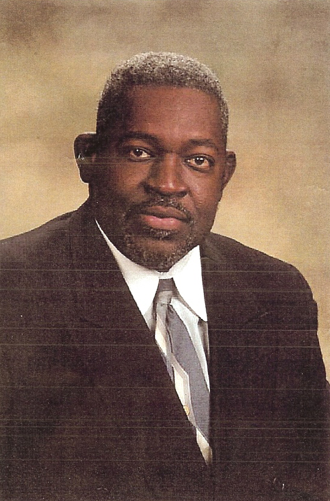

About
Today the Cooper Heritage Alumni Association is stronger and more active than ever in the Clayton community. Our organization provides annual scholarships in which in 2017, we were able to provide 13 high school seniors each with a $500 scholarships. CHAFA sponsors the N L Cannady Golf Classic, sponsors trips for the community’s youth to college basketball and football games, college day and other activities involving the youth. Our Association adopts a family in need in our community each year during the Christmas season.
